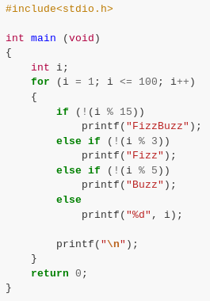
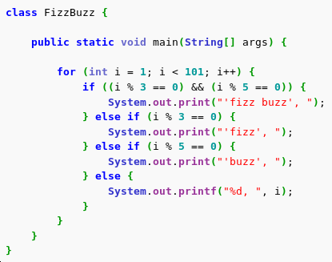
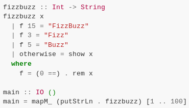

SSI
In science and philosophy, a paradigm (/ˈpærədaɪm/) is a distinct set of concepts or thought patterns, including theories, research methods, postulates, and standards for what constitutes legitimate contributions to a field.
– Wikipedia - Paradigm
Code describes how data is processed
Code should be grouped into logical blocks
Code should be grouped into procedures performing a single task
Data should be structured. Code belongs with data
Code describes what processing should occur
Functions are mathematical operations. Code is data
1, 2, Fizz, 4, Buzz, Fizz, 7, 8, Fizz, Buzz, 11, Fizz, 13, 14, FizzBuzz, …


